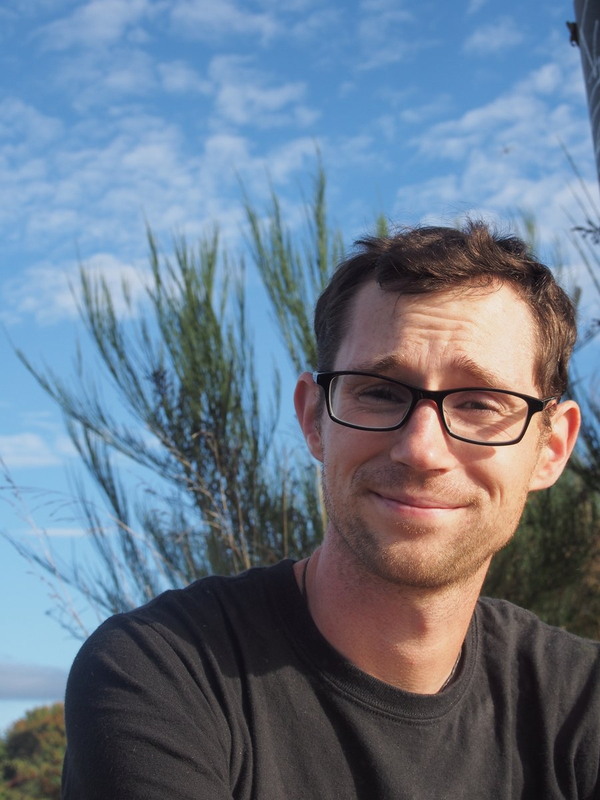
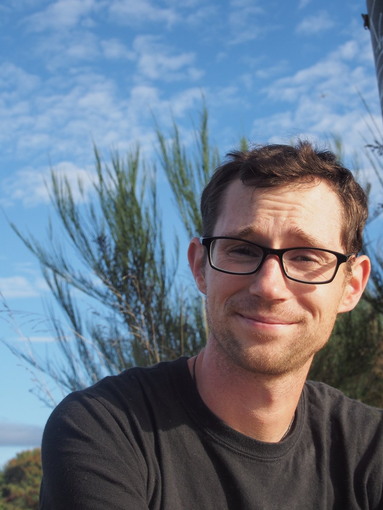

{% include custom/home_landing_row.html %}
Bio
- I grew up rambling around the hills of western North Carolina near the city of Asheville, the son of "back-to-the-lander" parents. I went to school at Guilford College in Greensboro NC and graduated in May 2006 with a degree in Biology and Environmental Studies. I have always loved outdoorsy stuff and was really involved with the Outdoor Club at my school. We organized hiking, paddling, skiing and other random crazy trips.
- After college I left the red clay of North Carolina for the red dust of tropical Australia. I was an intern for The School for Field Studies , a conservation research focused study abroad program outside of the city of Cairns in Queensland. This was a truly excellent experience, allowing me to flex my muscles in teaching, research, and... well... scrubbing lab equipment.
- In 2008 I moved back to North Carolina and took a job with the Sandhills Area Land Trust based out of Southern Pines. I spent six months monitoring conservation easements, writing baseline documentation reports, and talking to landowners about conservation. I love the Sandhills, the rich history, the smell of pine smoke, even the sweltering summers, but the academic itch was getting the best of me. In August 2008 I entered a graduate program in Ecology at UNC Chapel Hill.
- My graduate work built on the relationships that I formed while working for SALT. In collaboration with the North Carolina Sandhills Conservation Partnership, my lab group and I developed GIS tools to help land managers incorporate landscape connectivity considerations into environmental planning. In August 2011, I moved to Atlanta, GA to live with my long-time partner and work as a high-school teacher at The Howard School.
- In the summer of 2012, my wife Lizza and I moved to Seattle, WA, where I am a PhD student in the Biology department at UW working with Janneke Hille Ris Lambers.

 
